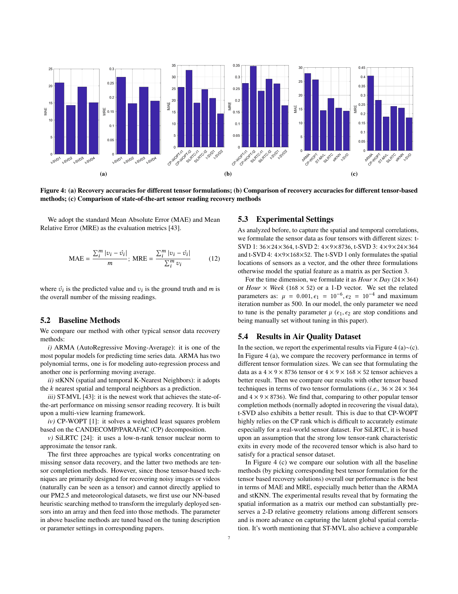

Problem
解决的问题
这篇论文属于“鲁棒数据分析”方向，核心关注 Sensor Data, Missing-Data Recovery, Tensor Completion, Data Analytics。它要解决的不是单纯提升一个指标，而是在 MobiQuitous 场景下，让模型、数据或感知系统面对真实扰动和任务约束时仍然可用、可评估、可解释。解决时空传感数据缺失和噪声污染问题。针对真实数据采集中的丢包、缺测和异常值。
Robust Data Analytics · 2017 · MobiQuitous
Interpolating the Missing Values for Multi-Dimensional Spatial-Temporal Sensor Data A Tensor SVD Approach
Problem
这篇论文属于“鲁棒数据分析”方向，核心关注 Sensor Data, Missing-Data Recovery, Tensor Completion, Data Analytics。它要解决的不是单纯提升一个指标，而是在 MobiQuitous 场景下，让模型、数据或感知系统面对真实扰动和任务约束时仍然可用、可评估、可解释。解决时空传感数据缺失和噪声污染问题。针对真实数据采集中的丢包、缺测和异常值。
Value
用于展示时，这篇论文可以放在“问题定义 - 方法设计 - 证据评估”的链条中理解。它的价值在于把 Sensor Data 具体化为一个可实验验证的研究问题，并通过 International Conference on Mobile and Ubiquitous Systems: Computing, Networking and Services (MobiQuitous)（CORE B） 的发表形态呈现该方向的代表性进展。
Extracted Figure Page
该页从原文 PDF 第 7 页截取，通常包含方法框图、系统流程、算法说明或实验设置。展示时可先用它建立视觉锚点，再结合下方中文说明讲清研究问题与技术贡献。
打开原文第 7 页
Technical Route
Innovation